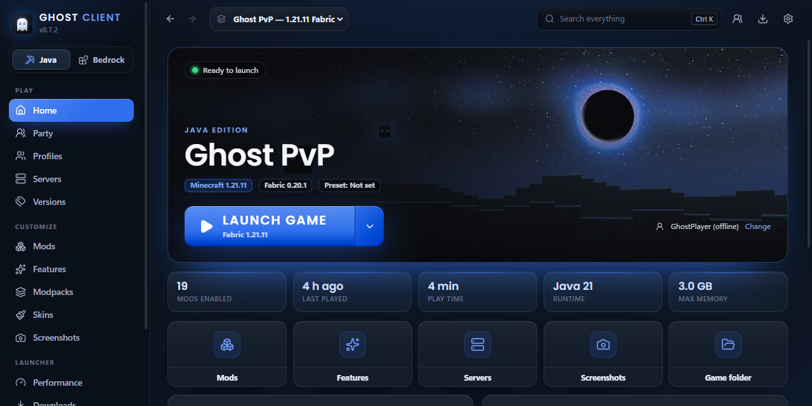
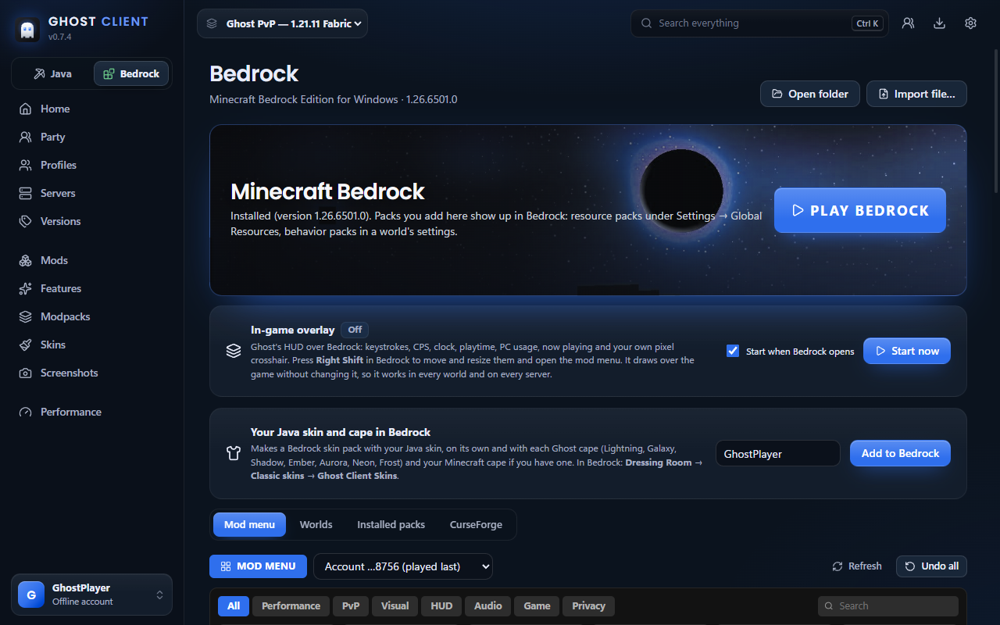

All our own
Every one of the 280+ modules in the Right Shift menu is made by Ghost Client, styled the same and set up in one place.
Ghost Client ships the fastest performance mods, a Right Shift menu with 280+ modules of our own, and friends and parties that work from the launcher to the game. Free, light, and no telemetry.

Ghost Menu is built into every Ghost Client profile. Everything in it is made by Ghost Client: no other client mods needed.
Press Right Shift in game or on the title screen. Categories down the side, search at the top (just start typing), and a card for every module with its own on/off switch.
Our own modules on the top row, and the best optimisation mods below, installed for you on every performance profile. Add anything else from Modrinth or CurseForge.
Every one of the 280+ modules in the Right Shift menu is made by Ghost Client, styled the same and set up in one place.
We keep an eye on the newest optimisation mods. When one earns its place, your performance profiles get it automatically.
Untick any optimisation mod in Settings → Performance, and drop in your own from Modrinth or CurseForge with compatibility checks.
Every performance and PvP profile gets this stack, picked for the Minecraft version you play. Each one fixes a different bottleneck, so they add up.
Rewrites how the world is drawn. The biggest FPS and stutter fix there is.
Faster physics, mob AI and chunk ticking, for singleplayer and hosted worlds.
Cuts the game's RAM use, which matters most on 8 GB PCs.
Draws the HUD, text and entities in fewer, bigger batches.
Skips mobs, chests and signs hidden behind walls.
Skips particles you can't see; crystals and explosions stop tanking frames.
Reads your mouse and keyboard on its own thread, so input feels snappier.
Drops FPS while the game is in the background, saving heat and battery.
Writes the game log off the thread that draws your frames.
Back to the title screen instantly while your world saves behind it.
Loads only the languages you use, so the game starts and reloads faster.
Your server list fills in at once instead of one server at a time.
New terrain generates faster in your worlds, identical to vanilla.
Game priority, memory and Java picked for your PC, and full FPS when the game is in the background.
Switch off the heaviest settings in one click, and get your exact settings back when you switch it off.
Measure your own PC in the launcher: Performance → Run benchmark, and Ghost Client picks the preset that fits.
No bloat, no ads, no account of its own. Profiles, mods, friends and the game, all from one small app.
Every version and mod setup gets its own profile. Ghost Client checks Java, the game files and your mods before it launches, so the game just starts.
Make a profile and Ghost Client installs the version, Fabric, Ghost Menu and the performance mods in one go. No hunting for downloads.
A 13 MB installer built on the system's own web view and Rust, not a bundled browser. It stays out of the way while you play.
Every download is checked against its published hash. Sign-in happens on microsoft.com and stays encrypted on your PC. No telemetry.
Ghost Friends works in the launcher and in the game, on any server, without Essential.

Start Minecraft Bedrock from Ghost Client and tune it with the same card layout: 89 modules across Performance, PvP, Visual, HUD, Audio, Game and Privacy.
Version 0.7.2 · Windows 10 and 11, 64-bit · free
Need an older version? Every release is in the Archive, each with its installer, MSI, portable zip and notes.
Windows may show "Windows protected your PC" because the installer isn't code-signed yet. Click More info → Run anyway.
Playing from another launcher? Ghost Client also comes as one mod file for Dawn, Feather, Prism, MultiMC or the official Minecraft Launcher: the Ghost Client home screen, mod menu, HUD, cosmetics, Ghost Friends and Fight Your Ghost. Put the Ghost Client mod for 1.21.11 or 1.21.1 in a Fabric profile's mods folder (Fabric API is inside it) and play. If that client's own menu also opens on Right Shift, click "Menu key" on the home screen to pick another key.
Both are free. Here's what Ghost Client adds.
| Ghost Client | Official launcher | |
|---|---|---|
| Every Java version, vanilla and Fabric | Yes | Yes |
| Microsoft sign-in for online play | Yes | Yes |
| In-game mod menu (Right Shift) with 280+ modules and a HUD editor | Yes | No |
| Performance mods and presets set up for your PC | Yes | No |
| Friends, parties and world hosting, from the launcher too | Yes | No |
| Browse and install mods and modpacks, with compatibility checks | Yes | No |
| Server list with live ping and one-click join | Yes | No |
| Bedrock mod menu, world backups and packs from CurseForge | Yes | No |
| Screenshot gallery and a crash helper that explains crashes | Yes | No |
Every Ghost Client release, newest first. Older versions don't get fixes; use them if you need to go back to one.
All versions are on GitHub Releases.
Yes. No ads, no account of its own, no telemetry.
Yes. Press Sign in with Microsoft in Settings → Accounts: you sign in on microsoft.com, and Ghost Client keeps the sign-in encrypted on your PC. You can also add your Ghost profile to the official launcher (Profiles → Add to official launcher) and play it from there.
Any Java Edition version can be installed and played. Ghost Menu (the Right Shift mod menu, Friends and cosmetics) is made for 1.21.11 and 1.21.1 with Fabric; other versions get mods from Modrinth with compatibility checks.
Bedrock can't load Java-style mods. Ghost Client starts it, changes Bedrock's own settings, and builds a small resource pack for things like the crosshair. That's what the Bedrock mod menu does.
On Profiles, press Share on a profile and send the link. Your friend opens it, presses Open in Ghost Client, and gets a new profile with the same Minecraft version, loader, mods, resource packs and shaders, downloaded from Modrinth and CurseForge. They see the full list before anything installs. Nothing is uploaded: the pack is inside the link. Mods you added by hand that aren't on Modrinth or CurseForge are left out.
Open Servers, add the server's address, and press Join. Ghost Client starts your selected profile and connects as soon as the game is up. Bedrock servers have a Join button too.
Ghost Client reads the crash report and tells you the likely cause on the Home page, for example a mod that doesn't fit your version, running out of memory, or the graphics driver. It names the mod Fabric suspects when there is one.
From 0.4.7 it updates itself: when a new version is out, Ghost Client installs it after a 10-second countdown (never while you play) and your settings carry over. You can turn that off in Settings. From 0.2.2 it tells you when a new version is out ("Update needed") and updates itself when you press Update now; your profiles, worlds and settings stay. From 0.4.0 the MSI version updates itself too. Older versions show a bar at the top: download the new installer and run it over your current version. The portable version: download the new zip and replace the old folder's files (keep its data folder).
No. Ghost Client keeps its own profiles and game files. It reads your official installation only when you import from it (Profiles → Add existing profile copies its mods and settings into a new Ghost Client profile with the same name; the original stays as it is), and adds a profile to the official launcher only when you ask (its profile list is backed up first).
Free for Windows 10 and 11. It installs in seconds and keeps itself up to date.